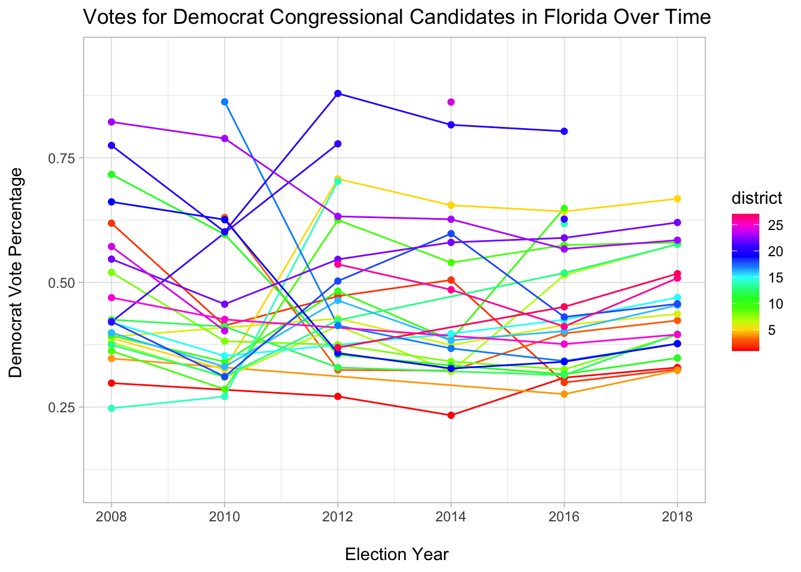

16. December 2020
Blog 2: A Simplified Look at What Multimember Congressional Districts Would Look Like In Floriida
Multimember Congressional Districts In Florida
Introduction
One of the things that has fascinated me the most about U.S. Politics versus the rest of the world is how our elections work. No, I am not referring to our wonky electoral college system, but rather our preferred voting systed: First-Past-The-Post Single member districts. All across the country, almost every single election is won by a candidate receiving the pluraluty of votes (or sometimes even a majority is required, how exciting!).
In high school, I grew especially interested in alternative voting styles, spurred by a video by CGP Grey. My interest was peaked when I was given the option to research any topic I wanted for my AP Capstone Research class in senior year. Naturally, I chose to research what Florida’s legislature would look like if it had 3 and 5 member districts. Now, nearly 4 years later as a college junior, I understand what I wrote about much better (and understand that what I wrote was not that great). In my high school project, I mainly focused on the qualitative changes a multimember district could bring. Today, I would like to briefly explore what the vote total look like in Floridian Congressional Districts.
What Florida Looks like Today

Florida’s House Congressional Delegation by Party, 117th Congress
Florida in 2016 and 2018

Florida’s House Congressional Delegation by Party, 116th Congress

Florida’s House Congressional Delegation by Party, 115th Congress
As you can see, there is hardly any change in which party holds each seat. Over the past 3 years, only two seats have changed parties: FL-26 and FL-27 which briefly went Democrat for the 116th Congress.
## [1] "2008-01-01" "2008-01-01" "2008-01-01" "2008-01-01" "2008-01-01"
## [6] "2008-01-01" "2008-01-01" "2008-01-01" "2008-01-01" "2008-01-01"
## [11] "2008-01-01" "2008-01-01" "2008-01-01" "2008-01-01" "2008-01-01"
## [16] "2008-01-01" "2008-01-01" "2008-01-01" "2008-01-01" "2008-01-01"
## [21] "2008-01-01" "2008-01-01" "2008-01-01" "2008-01-01" "2008-01-01"
## [26] "2010-01-01" "2010-01-01" "2010-01-01" "2010-01-01" "2010-01-01"
## [31] "2010-01-01" "2010-01-01" "2010-01-01" "2010-01-01" "2010-01-01"
## [36] "2010-01-01" "2010-01-01" "2010-01-01" "2010-01-01" "2010-01-01"
## [41] "2010-01-01" "2010-01-01" "2010-01-01" "2010-01-01" "2010-01-01"
## [46] "2010-01-01" "2012-01-01" "2012-01-01" "2012-01-01" "2012-01-01"
## [51] "2012-01-01" "2012-01-01" "2012-01-01" "2012-01-01" "2012-01-01"
## [56] "2012-01-01" "2012-01-01" "2012-01-01" "2012-01-01" "2012-01-01"
## [61] "2012-01-01" "2012-01-01" "2012-01-01" "2012-01-01" "2012-01-01"
## [66] "2012-01-01" "2012-01-01" "2012-01-01" "2012-01-01" "2012-01-01"
## [71] "2014-01-01" "2014-01-01" "2014-01-01" "2014-01-01" "2014-01-01"
## [76] "2014-01-01" "2014-01-01" "2014-01-01" "2014-01-01" "2014-01-01"
## [81] "2014-01-01" "2014-01-01" "2014-01-01" "2014-01-01" "2014-01-01"
## [86] "2014-01-01" "2014-01-01" "2014-01-01" "2014-01-01" "2014-01-01"
## [91] "2014-01-01" "2014-01-01" "2016-01-01" "2016-01-01" "2016-01-01"
## [96] "2016-01-01" "2016-01-01" "2016-01-01" "2016-01-01" "2016-01-01"
## [101] "2016-01-01" "2016-01-01" "2016-01-01" "2016-01-01" "2016-01-01"
## [106] "2016-01-01" "2016-01-01" "2016-01-01" "2016-01-01" "2016-01-01"
## [111] "2016-01-01" "2016-01-01" "2016-01-01" "2016-01-01" "2016-01-01"
## [116] "2016-01-01" "2016-01-01" "2016-01-01" "2016-01-01" "2018-01-01"
## [121] "2018-01-01" "2018-01-01" "2018-01-01" "2018-01-01" "2018-01-01"
## [126] "2018-01-01" "2018-01-01" "2018-01-01" "2018-01-01" "2018-01-01"
## [131] "2018-01-01" "2018-01-01" "2018-01-01" "2018-01-01" "2018-01-01"
## [136] "2018-01-01" "2018-01-01" "2018-01-01" "2018-01-01" "2018-01-01"
## [141] "2018-01-01" "2018-01-01" "2018-01-01" "2018-01-01" "2018-01-01"
## [146] "2018-01-01"## Warning: Removed 8 row(s) containing missing values (geom_path).## Warning: Removed 11 rows containing missing values (geom_point). > Note: Florida experienced a redistricting in 2015 that may have affected certain elections.
As you can see based off the graph, the Democrats have been making steady advances in congressional election since 2010. But many of the races are uncompetitive and sometimes not even contested. This is not somethign that would happen in a multimember election, where the possibility of a party/candidate reaching the 33% mark to attain a seat is very possible.
The 3-Member Congressional Districts

What a Potential Multimember Map Would Look Like in Florida
This map shows us that multimember maps can be very reflective of vote totals and still accomodate for minorty-majority districts.
Ideally, the map would be completely remade for multimember districts but this map is still useful to visualize what combining our current congressional districts would result in.
The “Fix” To Gerrymandering
One of my favorite things about multimember districts is that it makes it harder to gerrymander. The larger a district is, the more obvious it is to find gerrymandering. Today, gerrymandering happens much less often than in the 1800s and 1900s. Today’s voting district mapmakers are much more clever than those in the past, actually. Today’s mapmakers tend to exploit the Voting Rights Act to justify questionable looking districts. In the case of Florida’s 5th Congressional District, it was previously redistricted in 2015 after the Supreme Court found that gerrymandered to pack Democrats in one district. Yet, it was not an easy fight to take down the districts boundaries. Republican lawyers argued that the district was made that way to create a “minority-majority” district as required by the Voting Rights Act, but it was clear that this went beyond those motives as it created a district that was 80% Democrat and sprawled across 3 major cities.
With multimember districts, the requirement to create “minority-majority” districts is easier as districts only need to be 34% minority to fulfill the requirement. It also means that in smaller cities where minorities feel really minute, they still have a chance at being represented by at least 1 representitive that reflects their background.
Further Reading
While I am not the biggest fan of FiveThirtyEight, they occasionally make some really thought provoking projects such as their Atlas Of Redistricting. Here, FiveThirtyEight makes multiple maps showing how redistricting can affect the state’s congressional delegation. The map proves how hard it is to create districts that are reflective of thier consituents while also creating a complete picture of Florida’s voters.
Final Thoughts
I think we really need to start testing multimember districts in the United States, especially with different voting formats to understand which are preferred for voters and most reflective of the voter’s views in each district.